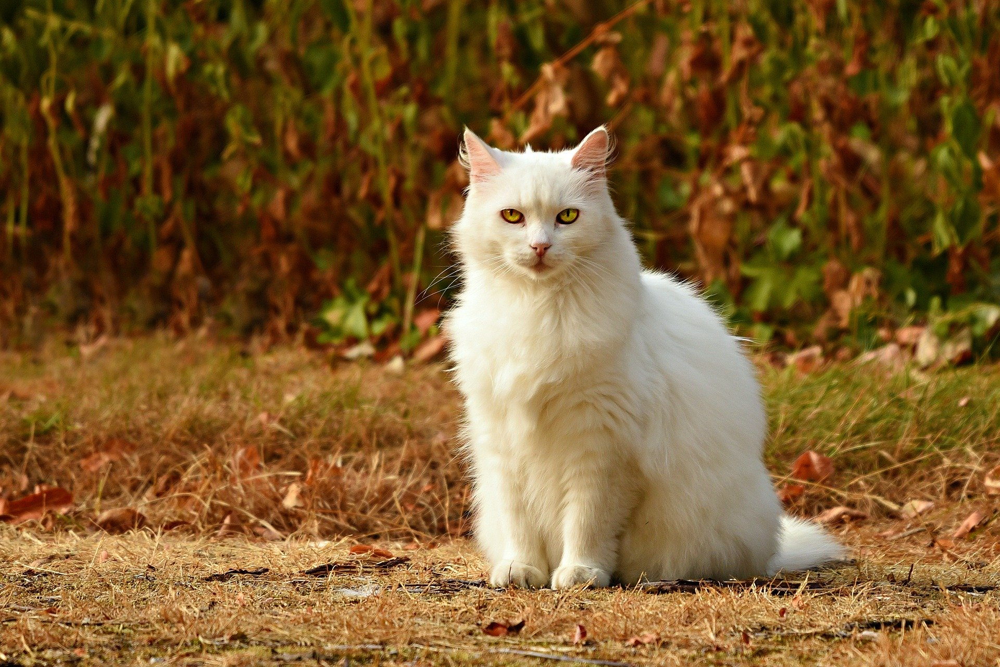

Who is this cat?
Thomas Cat is a fictional character and one of the two titular main
protagonists (the other being Jerry Mouse) in Metro-Goldwyn-Mayer's
series of Tom and Jerry theatrical animated short films. Created by
William Hanna and Joseph Barbera, he is a grey and white anthropomorphic
domestic short haired mute Tuxedo cat who first appeared in the 1940 MGM
animated short Puss Gets the Boot.
1- The cat was known as "Jasper" during his debut in the short;
2- however, beginning with his next appearance in The Midnight
Snack he was known as "Tom" or "Thomas".
L'histoire du "Chat botté"

more information
Tom Cat
His name, "Tom Cat", is based on "tomcat", a phrase which refers to male cats. He is usually mute and rarely heard speaking with the exception of a few cartoons (such as 1943's The Lonesome Mouse, 1944's The Zoot Cat and 1992's Tom and Jerry: The Movie). His only notable vocal sounds outside of this are his various screams whenever he is subjected to panic or, more frequently, pain. He is continuously after Jerry Mouse, for whom he sets traps, many of which backfire and cause damage to him rather than Jerry. His trademark scream was provided by creator William Hanna.more information
Tom on the TV
Tom has changed over the years upon his evolution, especially after the first episodes.
For example, in his debut, he was quadrupedal. However, over the years (since the episode Dog Trouble),
he has become almost completely bipedal and has human intelligence and he is similar to his
previous appearance, in 1945 shorts he had twisted whiskers and his appearance kept changing.
In the 1940s and early 1950s, he had white fur between his eyes.
In newer cartoons, the white fur is gone. As a slapstick cartoon character, Tom has a superhuman level of elasticity.
Tom is usually defeated (or very rarely, killed, like in Mouse Trouble, where he explodes)
in the end, although there are some stories where he outwits and defeats Jerry.
Tom has variously been portrayed as a house cat doing his job, and a victim of Jerry's blackmail attempts,
sometimes within the same short.
Tom and Jerry appeared together in the 1945 Technicolor Metro-Goldwyn-Mayer musical Anchors Aweigh where Tom
briefly appears as a butler for King Jerry, the latter who has a dance sequence with Gene Kelly, and also in
another musical with the same studio Dangerous When Wet (1953), where, in a dream sequence, main character
Katie Higgins (Esther Williams) does an underwater ballet with Tom and Jerry, as well as animated depictions
of the different people in her life.